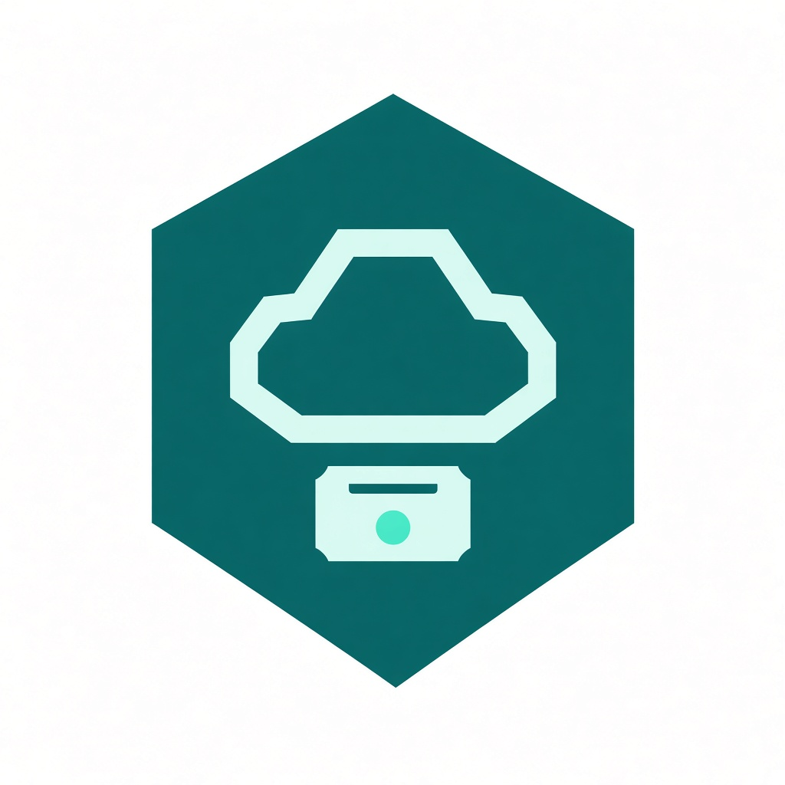
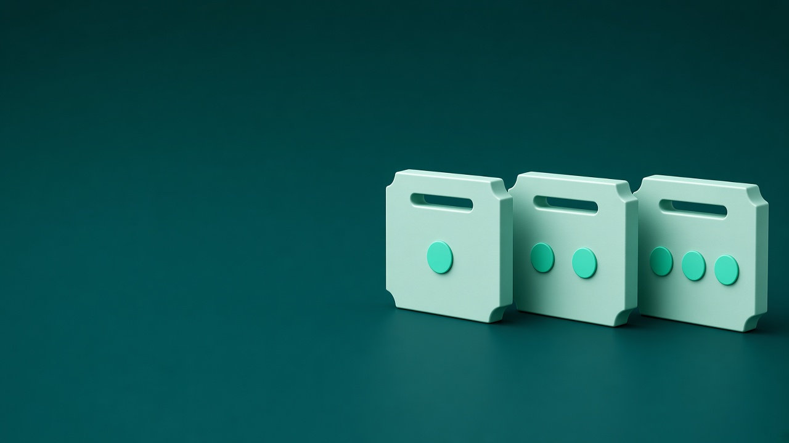
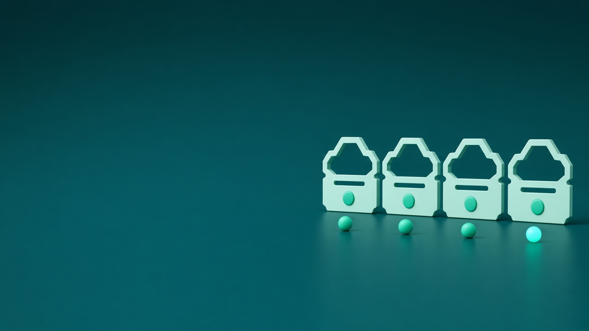
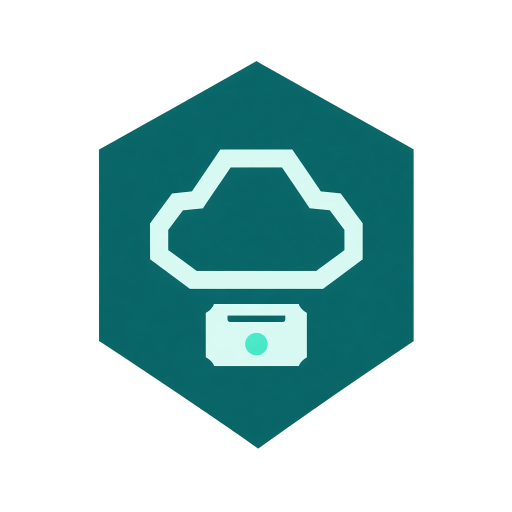

Catálogo no espera
Si Solicitudes está detenido, la categoría igual queda guardada. El aviso espera en la cola hasta que el servicio vuelva.
Desarrollo Cloud Native I · DSY1107 · Noviembre 2026

Evaluación parcial n.° 2
De lo síncrono a lo asíncrono
En la EP1, Solicitudes pedía la categoría en el mismo instante. Si Catálogo no respondía, Solicitudes fallaba con él. En la EP2 esa llamada es un mensaje: Catálogo publica y sigue; Solicitudes lo lee cuando puede. El costo es un breve retraso.

MESATECH CLOUDPor qué dejamos la llamada en el momento
En la EP1 los dos servicios tenían que estar arriba juntos: la categoría se pedía por API, ahí mismo. Ahora Catálogo guarda, publica y sigue. Solicitudes lee el mensaje cuando puede. En P2 ese mensaje fue «Redes-EP2-AWS», id 1 en las dos bases.
Si Solicitudes está detenido, la categoría igual queda guardada. El aviso espera en la cola hasta que el servicio vuelva.
Solicitudes no abre la base de Catálogo. El formulario usa la copia local, la que ya llegó por el aviso.
El aviso llega solo a Solicitudes, que es quien arma la solicitud. Exchange direct: una etiqueta, una cola.
Dónde espera el mensaje
Fuera de AWS · la llamada
Entrada
Cliente, operador o administrador.
EP1
Entrega el token v2 a React.
access_as_user
Paso 3
Solo llama al Gateway.
sin IPs de las EC2
React no llama a las EC2. La única puerta es el Gateway, por el puerto 443.
5672solo SG A + SG B15672admin /3222admin /325432cada RDS, solo su SGAWS VPC · us-east-1EC2 us-east-1b · RDS us-east-1d
Paso 4 4
Reenvía al BFF.
HTTPS 443 · JWT
Paso 5
Llama a Catálogo y a Solicitudes.
HTTP 8080 · sin JPA · por confirmar
EC2 A 67
Guarda la categoría y publica.
puerto por confirmar
EC2 C · 5672
sin guest · mesatech
EC2 B 8
Guarda la copia local.
categoriaId
El broker no guarda categorías.
mesatech_
solo SG A
mesatech_
solo SG B
El BFF llama a los dos: Catálogo por el 8082 y Solicitudes por el 8081. La línea punteada es el otro tramo: Catálogo deja el mensaje y no espera la copia.
Caer por separado
El mensaje solo sirve si un servicio puede caer sin arrastrar al otro. Por eso cada uno tiene su máquina y su base. Una sola base, aunque tuviera esquemas distintos, los volvería a atar como en la EP1.
Crea la categoría y publica el aviso · OpenJDK 17
Lee el aviso y guarda la copia · OpenJDK 17
Solo el intermediario. No guarda categorías
Cada base acepta solo a la EC2 de su servicio
El mensaje es el único puente
Si el aviso se pierde, Solicitudes nunca se entera. La imagen queda fija en 4.2, el nodo no cambia de nombre y el mensaje se escribe a disco. Si se recrea el contenedor, la cola sigue. P5 lo comprobó.
Un acceso que antes no existía
Al poner un intermediario aparece un puerto nuevo. Solo Catálogo y Solicitudes pueden usarlo. Ninguno de los dos entra a la base del otro.
| Destino | Puerto | Origen permitido | Para qué |
|---|---|---|---|
| EC2 C · RabbitMQ | 5672 AMQP | SG de EC2 A y SG de EC2 B | Solo A y B hablan con el broker |
| EC2 C · RabbitMQ | 15672 consola | IP de administración /32 | La consola no queda en internet |
| EC2 A, B y C | 22 SSH | IP de administración /32 | SSH solo desde esa IP |
| RDS Catálogo | 5432 | Solo SG de EC2 A | Solicitudes no entra aquí |
| RDS Solicitudes | 5432 | Solo SG de EC2 B | Catálogo no entra aquí |
Desde internet no hay camino a PostgreSQL. Entra solo la EC2 dueña, por el puerto 5432.
Apunta al security group de la máquina. Si al reiniciar cambia la IP, la regla sigue valiendo.
RabbitMQ no usa guest. Catálogo publica con un usuario y Solicitudes lee con otro.
El productor no conoce la cola
En este modelo, Catálogo no elige la cola. Publica en el exchange con la etiqueta categoria.creada. RabbitMQ deja el mensaje en la cola de Solicitudes solo porque la etiqueta coincide.
mesatechSepara las colas de este proyecto de cualquier otra del mismo broker
catalogo.exchangeRecibe el aviso y elige la cola. No lo guarda
categoria.creadaTiene que coincidir completa. Si no, el aviso vuelve a Catálogo
solicitudes.catalogo.queueAquí espera el JSON, en orden, hasta que Solicitudes lo lea
catalogo_publicador · solicitudes_consumidorQuien publica no administra. Quien lee no puede publicar
Ya no comparten la llamada
Antes se entendían por la respuesta de la API. Ahora solo comparten este mensaje. La entrega es al menos una vez: si el mismo id llega de nuevo, se actualiza la fila.
| Campo | Tipo | Regla |
|---|---|---|
eventId | String | Identifica este envío |
tipoEvento | String | Solo se acepta categoria.creada |
fechaEvento | Instant | Cuándo se publicó, en UTC |
categoriaId | Long | El mismo número en las dos bases |
nombre | String | El texto que ve el técnico en el formulario |
{ "eventId": "be46e6ed-e156-4a91-9b88-44ab7606283a", "tipoEvento": "categoria.creada", "fechaEvento": "2026-11-04T03:34:20Z", "categoriaId": 1, "nombre": "Redes-EP2-AWS" }
Dos tramos, dos confirmaciones
Dos confirmaciones distintas. Un fallo de formato no queda archivado: no hay DLQ.

Qué no pasó a ser asíncrono
El cambio es entre servicios. Quien usa el portal sigue esperando la respuesta de su petición. Las categorías del formulario salen de la copia, no de una llamada a Catálogo en ese instante.
Pide el token a Entra ID y lo manda en cada petición
Distingue cliente, operador y administrador
Única entrada pública. Sin token responde 401
Vuelve a revisar token y rol. No tiene base
«Mis solicitudes» sigue en las dos versiones
GET /v1/solicitudes/categorias

La decisión, puesta a prueba
Ocho pruebas en AWS, el 4 de noviembre. Cada tarjeta abre su captura.
P2 y P8 usaron el BFF en el PC, por túnel. No es una falla del mensaje.
Hasta dónde llega lo aplicado
Listo
Tres máquinas, dos bases privadas y las reglas de red ya aplicadas · Ari
Catálogo publica y Solicitudes guarda la copia. Los dos JAR están en AWS · Nico y Skarlett
Ejecutadas el 4 de noviembre, con bitácora y capturas · Skarlett
El JSON del aviso, el despliegue y el Word/PDF · Giannina y Skarlett
Abierto
Si el broker está caído al crear, Catálogo responde 503. Cuando RabbitMQ vuelve, esa categoría no se publica de nuevo.
Si el mismo aviso llega dos veces, Solicitudes actualiza la fila por categoriaId. No deduplica por eventId.
No hay DLQ. Si el JSON está mal, se descarta y no queda archivado para revisarlo después.
Si cae la EC2 C, no hay otro nodo. El volumen protege un reinicio del contenedor, no la caída de la máquina.
El mensaje, de la llamada al ack
Desarrollo Cloud Native I · DSY1107
Evaluación parcial n.° 2
Preguntas

MESATECH CLOUD
EP2 · De la llamada al mensaje
Clic o cualquier tecla para continuar